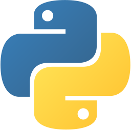
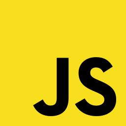

Business Statistics undergraduate student at ITS specializing in financial analytics. Deployed three Streamlit dashboards for stock decision support, churn prediction, and budget tracking; one is used by two budget analysts at Balai Monitor SFRID Surabaya. Forecast IDX stock prices with 2–3% MAPE and am developing a hybrid ARIMAX–XGBoost thesis model. As a Lecturer Assistant, mentored 30+ students in each of three courses, and produced social media content that reached 220,000 views in one month. Proficient in SQL, Python, R, Power BI, and Tableau.
Areas of focus
01
Computational finance
Equity analysis, CAPM and APT valuation, portfolio optimization, and ARIMA forecasting.
02
Machine learning
Predictive analytics projects, including a customer churn app built with Streamlit.
03
Data analytics
Interactive reports and dashboards using Looker Studio, Tableau, and Power BI.
04
Content creation & editing
Instagram feed designs, campaign visuals, and content editing, from visual direction to publishing-ready assets.
Tools & technologies
Tools and platforms featured across my projects.

Python
R / Shiny
SQL
Streamlit
Tableau
Power BI
Looker Studio
Minitab
Bootstrap
HTML
CSS

JavaScript
Figma
Canva
Experience
Professional experience
Jan 2026 – Present
Lead Coordinator
Faculty of Vocational Media Team · Surabaya
Coordinate creative, public relations, and production teams for institutional communication.
Advise supervisors on branding using audience data and mentor team members on quality.
Aug 2025 – Present
Lecturer Assistant, Department of Business Statistics
Institut Teknologi Sepuluh Nopember (ITS) · Surabaya
Evaluasi dan Visualisasi Data (Aug 2026 – Present): mentor 30+ students in Power BI, Tableau, Looker Studio, Streamlit, R, and Excel; develop practice modules and case studies.
Komputasi Statistika (Feb – Jul 2026): facilitated R and Excel/VBA labs for 30+ students and evaluated assignments and final projects.
Algoritma dan Pemrograman (Aug – Dec 2025): mentored 30+ students in Python-based statistical analysis; approximately 90% submitted assignments.
Sep – Oct 2026
Internship · Data & Technical Operations
Balai Monitor SFRID Kelas I Surabaya · Surabaya
Built a Streamlit dashboard to automate finance data processing, cleansing, and resource tracking; used by two budget analysts.
Developed an automated TOR generator and web tools for workflow management.
Dec 2024 – Dec 2025
Content Creator
Faculty of Vocational Media Team · Surabaya
Produced social media visuals and copy that drove approximately 220,000 views in one month.
Managed faculty social accounts and coordinated joint publications with campus units.
Shaped branding strategy that helped three study programs rank among ITS's Top 10 most competitive.
Sep – Dec 2024
Graphic Designer
Sachenka · Surabaya
Created campaign visuals and educational content aligned with the brand to support sales and community engagement.
Organizational experience
Mar 2025 – Mar 2026
Social Media Staff · Ministry of Multimedia & Information
ITS Student Executive Board
Ran official social media operations, used audience insights to recommend content improvements, and coordinated messaging across ministries.
Jan 2025 – Jan 2026
Design Development Bureau Staff · Department of Communication and Information
HIMADATA ITS
Created visual materials for internal and external audiences while maintaining consistency with the organization's brand guidelines.
Sep 2024 – Present
Selection and Data Center Committee
Faculty of Vocational Studies Guide · ITS
Designed selection workflows and evaluation criteria, analyzed recruitment metrics, and managed member records.
Certificates & education
Education
01
Undergraduate degree · Expected Aug 2027
Applied Bachelor in Business Statistics
Institut Teknologi Sepuluh Nopember (ITS) · Surabaya
GPA 3.28 / 4.00
Certificates & programs
01
English proficiency · Test Apr 10, 2026 · Issued Oct 27, 2026
ITS EFL Score: 483
Global Language Center · Institut Teknologi Sepuluh Nopember (ITS)
IDX Cyclical Economy 30: Fundamental & Technical Analysis
A fundamental and technical study of Indonesia’s cyclical stocks. Its companion, the IDX Economic30 Stock Dashboard, presents key company ratios, ticker selection, and daily price performance in Power BI.
Impact: Brings company fundamentals and price trends together so investors can compare IDX Economic30 stocks from one dashboard.
Tools & data
IDXInvesting.comPower BI
Skills
Fundamental analysisTechnical analysisFinancial ratio analysisEquity researchDashboard design
A Streamlit decision-support dashboard that compares XGBoost and Artificial Neural Network (ANN) models to identify bank customers at risk of churn and present the selected model’s predictions.
Impact: Turns churn-model outputs into an explorable customer-retention view, helping users inspect who may need follow-up.
Tools
PythonStreamlit
Skills
Churn analyticsXGBoostArtificial neural networksModel comparisonDecision support
A Streamlit tool for analyzing uploaded RAB budget files, summarizing the data with charts, and generating a draft Terms of Reference (TOR) for review.
Impact: Brings budget-file analysis, visual summaries, and draft TOR preparation into one review workflow.
Tools
PythonStreamlit
Skills
Budget data analysisFile processingData visualizationTOR drafting
An interactive Looker Studio report analyzing AI-tool usage across sessions, satisfaction, prompts, student levels, activities, platforms, and countries.
Impact: Makes usage and satisfaction patterns easier to explore across learner groups, activities, and AI platforms.
Tools
Looker Studio
Skills
AI usage analyticsDashboard designData visualizationSatisfaction analysis
An interactive Tableau dashboard tracking headcount, active employees, attrition, and job satisfaction, with breakdowns by department, education, age, gender, and job role.
Impact: Consolidates workforce and attrition indicators into a view that supports HR trend exploration and follow-up questions.
An R Shiny quiz that recommends a Spotify song based on a user’s mood, preferred style, and emoji selection, then displays the match with a Spotify player.
Impact: Converts a few personal preferences into an immediate, playable music recommendation.
Tools
RShinySpotify embed
Skills
User preference mappingRecommendation flow designInteractive app design
An R Shiny climate-data explorer for comparing global temperature trends across countries and years, with map and forecast views and CO₂ reduction and reforestation policy simulations.
Impact: Lets users explore climate trends and compare policy scenarios in an interactive, visual format.
Tools
RShiny
Skills
Climate data visualizationForecastingPolicy scenario analysisInteractive data exploration
A Streamlit decision-support dashboard for LQ45 blue-chip analysis and capital allocation, combining sentiment, fundamental, and technical analysis with stock screening and portfolio planning.
Impact: Brings market sentiment, company fundamentals, and technical signals into one workflow for comparing stocks and planning a portfolio.
A comparative analysis of 300 Indonesian stocks using t-SNE for dimensionality reduction and K-Means and Gaussian Mixture Models (GMM) for clustering. GMM led the internal evaluation with a Davies–Bouldin Index of 0.88.
Impact: Groups 300 stocks across six indices to expose similarities that can guide further market research; GMM performed best among the evaluated clustering methods.
A comparison of an LSTM baseline and fine-tuned IndoBERT for multiclass news classification using UMPOHoax data. IndoBERT achieved 69.26% accuracy and a macro F1-score of 0.5401.
Impact: Provides a tested Indonesian news-classification baseline and reports both accuracy and macro F1 to show performance across classes.
Tools & data
PythonUMPOHoax dataset
Skills
Text classificationLSTMIndoBERT fine-tuningClass-imbalance evaluation
An analysis of 120 Indonesian-language Google Maps reviews using lexicon-based sentiment analysis and Latent Dirichlet Allocation (LDA) to surface themes around facilities, cleanliness, ticket prices, and service.
Impact: Turns 120 reviews into a concise view of visitor sentiment and recurring topics that can inform service-improvement discussions.
Data & methods
Google Maps reviewsWeb scrapingNLPLDA
Skills
Sentiment analysisTopic modelingIndonesian text analysisReview insights
Selected work created during my On-the-Job Training with the ITS Media Center Social Media Team (Sep 17 – Oct 19, 2024), including campus news and event feeds, Reels covers, the UPT Medical Center opening, an ASEAN University Games handball recap, and a Vivat Podcast cover.
Impact: Helped package campus news and events into ready-to-publish visuals for ITS Social Media channels during the OJT period.
Social content for HIMADATA ITS, combining World Issue economic microblogs on U.S. tariffs and an Australian rate cut with BIMPREST 2025 Open Community campaign posts and a participant story.
Impact: Makes economic topics easier to scan and helps communicate BIMPREST’s community program through coordinated social content.
U.S. tariffs and Indonesia · Microblog coverWhy were tariffs imposed? · Explainer